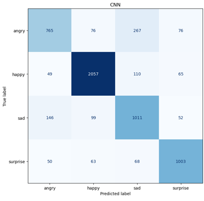
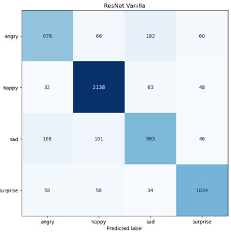
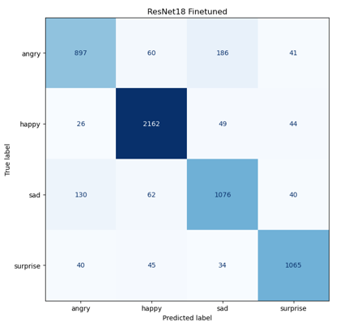
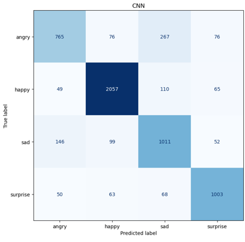
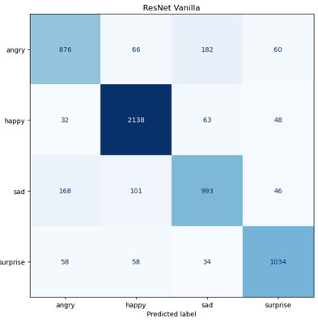
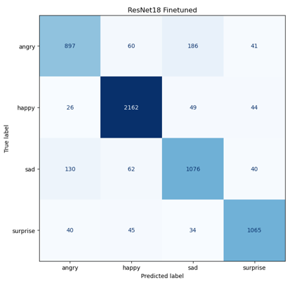

Bibek Koirala
Graduate Researcher in Computer Science
Bibek Koirala is a graduate researcher in Computer Science at Southern Illinois University Carbondale and serves as a Research Assistant specializing in computer vision. His research focuses on instance-level segmentation and classification of microscopy images using Vision Transformers and Feature Pyramid Network architectures. In addition to computer vision, he has conducted interdisciplinary research spanning economics, criminology, and software development, applying econometric and machine learning techniques to analyze and predict inflation using macroeconomic indicators, assess crime-related perceptions and patterns, and develop data-driven software systems.
Download Resume


 




